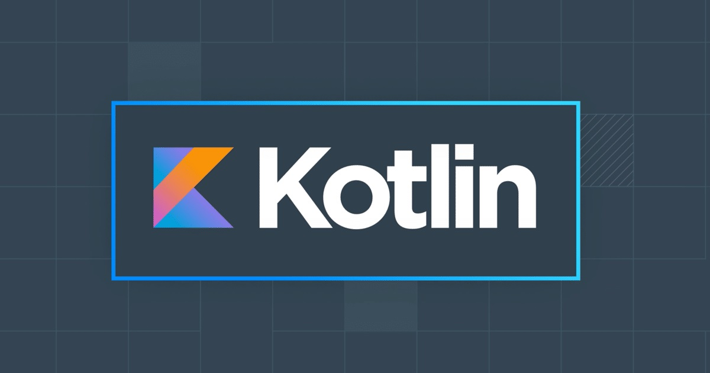

KOTLIN nedir?
Kotlin, teknoloji devi Google’ın 2017 yılında desteklemeye başladığını duyurduğu programlama dilidir. Açık kaynaklı bir yazılım dili olan Kotlin, Java bayt kodunu Android üzerinde veya Java Sanal Makinesi üzerinde çalışabilecek şekilde iletir ve işlevsel programlama özelliklerini nesne yönelimi ile birleştirir.

Kotlin Nedir?
Prag merkezli yazılım şirketi JetBrains tarafından geliştirilen Kotlin, Java ile tamamen uyumlu çalışacak şekilde tasarlanmıştır. Kotlin’de yer alan herhangi bir Java çerçevesi veya kitaplığı geliştiriciler tarafından kullanılabilir. Halihazırda Java bulunurken neden Kotlin’in geliştirildiği sorularına geliştirici firma JetBrain, Java’dan daha iyi kod yazılabilen ve güvenlik ile performanstan ödün vermeyen bir dil ortaya çıkarmak için, şeklinde cevap vermiştir. Bu sebeple, Kotlin’in esas işlevinin daha güvenli kodları daha az kod satırı kullanarak yazmak olduğunu söyleyebiliriz. Geliştiriciler genelde, Java ve Kotlin dilleri arasında kıyas yaparak bu dillerden hangisinin daha üstün olduğunu ya da birinin diğerini bitirip bitiremeyeceğini tartışırlar. Fakat bu tartışma esasında hatalı bir yargıyla başlar çünkü zaten Kotlin hala Java ile beraber çalışmaktadır. Bundan dolayı birinin diğerini ortadan kaldırması söz konusu olamaz. Sadece, Kotlin Java’dan daha kolay ve hızlı bir kod yazım süreci sunar. Nesne yönelimli bir dil olmasından dolayı Java’ya göre bazı avantajları bulunmaktadır. Bunun için Java kullanarak geliştirme yapan şirketlerin kademeli olarak Kotlin’e geçtiklerini görmekteyiz.

Kotlin’in Özellikleri
- Kotlin açık kaynak kodlu bir yazılım dilidir ve dileyen her geliştirici Kotlin kodlarında değişiklik yapabilir ve geliştirilmesine katkı sağlayabilir.
- Nesne yönelimli bir dil olan Kotlin, Android ve Java ile tam entegre bir şekilde çalışır. Kotlin ve Java’yı birbirlerini bütünleyen iki dil olarak düşünebiliriz.
- Kotlin, Perl Script ve Unix/Linux dizisine ekleme yapılmasını destekler.
- Java ile karşılaştırıldığında Kotlin daha az ve öz bir yazım diline sahiptir. Geliştiricilerin Kotlin’e gösterdiği büyük ilginin altında bu sadeliği ve özgünlüğü yatmaktadır.
- Kotlin’de, Java’da görülen null hatasının görülmesi çok zordur.
- İstemci ve sunucu tabanlı web uygulamalarının geliştirilmesinde Kotlin kullanılabilir.
- Android Studio’da Java dili ile yazılmış bir dili kolayca Kotlin diline çevirebilirsiniz.
- Kotlin’in bir diğer önemli özelliği de Google tarafından desteklenmesidir. Bu, Kotlin dilinin hiçbir zaman ölmeyeceği ve sürekli güncellemeler yapılarak iyileştirileceği şeklinde de okunabilir.
İstatistiklere göre Android geliştiricilerin yüzde 60’ından fazla olan kısmı uygulama geliştirme süreçlerinde Kotlin’i tercih ediyor. Katkıda bulunanlar açısından ise GitHub üzerinde en hızlı büyüyen yazılım dili konumunda. Dünyanın en çok indirilen ve kullanılan uygulamalarından bir kısmı Kotlin kullanılarak yazılmıştır. Kotlin dilini kullananlar arasında Netflix, Airbnb, Evernote, Pinterest, Google, Square, Slack, N26 ve Tinder gibi dünya devi uygulamalar bulunuyor.
Kotlin Nerede Kullanılır?
Kullanım alanı geniş olan bir dil olsa da Kotlin günümüzde en çok Android uygulamaların geliştirilmesinde kullanılıyor. VueJS ve ReactJS gibi popüler kitaplıkların kullanılmasına da olanak sağlayan yazılım dili, sunucu ve istemci taraflı geliştirmelerde de kullanılmaktadır.
Kolay ve anlaşılır bir yazılım dili olmasından dolayı Kotlin’in öğrenim süreci diğer yazılım dillerine kıyasla daha kısadır. Ayrıca, Google’ın desteğini arkasına alması ve yine Google’ın Android işletim sistemi için geleceğin dili olduğunu öngörmesinden dolayı popularitesi sürekli artan bir dildir.
Kotlin’in eksi yönleri olarak ise öğrenim kaynaklarının diğer popüler yazılım dillerine göre daha kısıtlı olması ve hala istenilen popülariteye ulaşmamış olması gösterilebilir. Fakat bunlara rağmen, hala Android tabanlı uygulama geliştiren veya geliştirmek isteyen developerlar için en iyi seçeneklerden birisi olarak görünüyor.